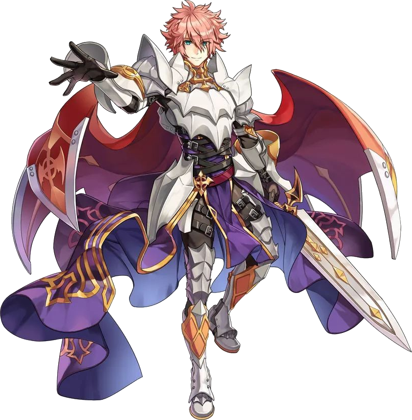
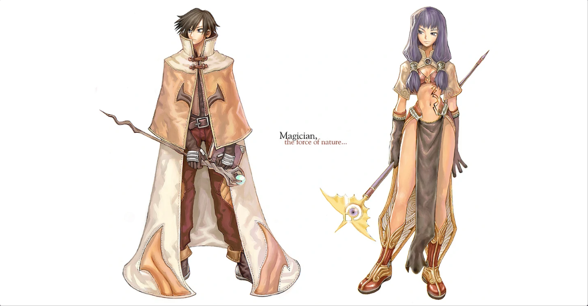

File list
This special page shows all uploaded files.
{kind=link}
{kind=link}
| Date | Name | Thumbnail | Size | User | Description | Versions |
|---|---|---|---|---|---|---|
| 06:09, 16 April 2016 | Spinerino.gif (file) |  |
881 KB | Ihsan | 1 | |
| 00:18, 20 February 2021 | 630f38c44ceadcf49cf9b46fa98496f4.png (file) | 875 KB | Ludrath | giant_gold_poring | 1 | |
| 23:22, 15 March 2017 | AloeLeafletOnCat.png (file) | 857 KB | AloeLeaflet | 1 | ||
| 14:07, 13 February 2016 | Acidgif1.gif (file) | 852 KB | Adri | 1 | ||
| 06:36, 19 April 2022 | Spell Chanting.gif (file) |  |
836 KB | Miyu | 1 | |
| 00:10, 9 October 2018 | PetGroomBig.png (file) | 836 KB | AloeLeaflet | 1 | ||
| 16:24, 1 October 2016 | Rebel skilltree.png (file) | 835 KB | Appleproject | 1 | ||
| 19:59, 26 August 2016 | GSRESkill.png (file) |  |
834 KB | Fyrus | 1 | |
| 17:21, 24 November 2018 | Navloe7.png (file) | 832 KB | AloeLeaflet | 1 | ||
| 23:04, 29 August 2022 | 28 Gernoz.png (file) |  |
828 KB | Hurt Locker | 1 | |
| 12:47, 6 February 2016 | IntroA12.jpg (file) | 808 KB | Halves | 1 | ||
| 00:20, 11 June 2020 | Ara-Sorcs.png (file) | 797 KB | Ara | Use as portrait on Ara's Sorcerer Guide | 1 | |
| 11:01, 6 December 2016 | CLS RG2.png (file) |  |
785 KB | Halves | 5 | |
| 20:24, 29 August 2017 | Draftwoe.png (file) |  |
780 KB | Shalltear | 2 | |
| 16:30, 3 December 2022 | Dragonknight.png (file) |  | 765 KB | Nithraniel | 1 | |
| 09:10, 5 November 2017 | Runeknight.jpg (file) | 741 KB | Eli | 1 | ||
| 15:38, 6 October 2018 | AlchemistGuild.png (file) | 738 KB | AloeLeaflet | 1 | ||
| 13:02, 6 February 2016 | IntroA.jpg (file) | 735 KB | Halves | 1 | ||
| 22:41, 3 June 2022 | FinalDamagePerMDEFBypass.jpg (file) |  |
735 KB | HairyWizard | 1 | |
| 06:39, 20 July 2020 | TheRealSlim.gif (file) | 714 KB | G00suede | 1 | ||
| 03:40, 2 October 2021 | HW 2021 Entrance.png (file) |  |
713 KB | Kasama | Entrance for the Halloween 2021 event | 1 |
| 07:41, 10 September 2020 | BlackIntelsava.png (file) | 712 KB | BlackIntels | Artwork by Rox Kenway Rokishi#7334 | 1 | |
| 09:10, 24 March 2021 | Giphy.gif (file) |  |
704 KB | Leriaskho | 1 | |
| 11:46, 9 April 2018 | Madomeme5bLOOPPLS.gif (file) | 704 KB | RadenWA | 1 | ||
| 11:14, 9 April 2018 | Madomeme5.gif (file) | 704 KB | RadenWA | 2 | ||
| 23:29, 6 October 2018 | AlchemistGuildeu.png (file) | 701 KB | AloeLeaflet | 1 | ||
| 14:35, 21 December 2022 | Smytsu-paper-phone.png (file) | 694 KB | Ludrath | 1 | ||
| 13:11, 7 May 2018 | FAWMEME.gif (file) | 691 KB | RadenWA | 1 | ||
| 00:18, 17 September 2015 | Squest5.png (file) | 691 KB | AloeLeaflet | 1 | ||
| 13:59, 20 September 2018 | NovaRO Bowling Bash Gutter Lines.jpg (file) | 683 KB | G5457s | Gutter lines are bad. Very, very bad. | 1 | |
| 12:52, 28 January 2021 | New-Eden-Turns-ins.png (file) | 683 KB | Tom Delong | 1 | ||
| 18:08, 13 June 2021 | Izlude npcs.png (file) | 670 KB | Minza | Reverted to version as of 18:00, 13 June 2021 (UTC) | 3 | |
| 14:10, 7 October 2016 | Rebel Portrait.jpg (file) | 664 KB | Bubiche | 1 | ||
| 07:38, 10 February 2018 | HazyForestMap.jpg (file) |  |
663 KB | DualityDiscretion | 1 | |
| 11:47, 10 October 2015 | MH OctobroLastStage.jpg (file) | 659 KB | Renata | 1 | ||
| 17:55, 17 June 2023 | Thick Wires.png (file) |  |
654 KB | Apainitu123 | 1 | |
| 08:03, 10 May 2017 | Mage SN.jpg (file) | 654 KB | G5457s | Mage SN in Sara's Memories | 1 | |
| 15:21, 10 October 2019 | Cinderfire Crop.png (file) |  |
653 KB | Cinderfire | 1 | |
| 02:47, 15 February 2018 | NovaExt.jpg (file) |  |
650 KB | DualityDiscretion | 1 | |
| 14:42, 27 September 2015 | MH CTSample.jpeg (file) |  |
630 KB | Renata | (Monster Hunting) Hunting Celestial Tendrillions in Flooded Forest with a full party. | 1 |
| 17:37, 26 April 2023 | ElementalMaster F.png (file) |  |
624 KB | Melzdash | 1 | |
| 05:48, 23 April 2022 | Miyu HighWizard art.png (file) |  |
621 KB | Miyu | 2 | |
| 11:06, 19 May 2018 | Autospell SN.jpg (file) |  |
616 KB | G5457s | Switched pic from Airship Instance to Greenwich Meridian Time. | 2 |
| 12:56, 13 December 2022 | Turbo EXT 2.png (file) | 610 KB | Tamugi | 1 | ||
| 03:28, 13 March 2017 | SNtanksHardAmda.jpg (file) | 603 KB | G5457s | A Super Novice with just 10,000HP tanking Hard Amdarais and NOT dying. | 1 | |
| 04:17, 3 August 2019 | Danteshop.png (file) |  |
601 KB | Hatsumei | 1 | |
| 05:42, 23 April 2022 | Miyu Wizard art.png (file) |  | 587 KB | Miyu | 1 | |
| 23:16, 6 October 2018 | AlchSup2.png (file) | 575 KB | AloeLeaflet | 1 | ||
| 15:48, 21 April 2017 | Be Brave Little One.jpg (file) |  |
573 KB | G5457s | First time I've tanked all MVPs in demon god wooooo | 1 |
| 07:48, 11 November 2015 | Nova.png (file) | 557 KB | Halves | 1 |
{kind=link}
{kind=link}
{kind=link}
{kind=link}
{kind=link}
{kind=link}
{kind=link}
{kind=link}
{kind=link}
{kind=link}
{kind=link}
{kind=link}
{kind=link}
{kind=link}
{kind=link}
{kind=link}
{kind=link}